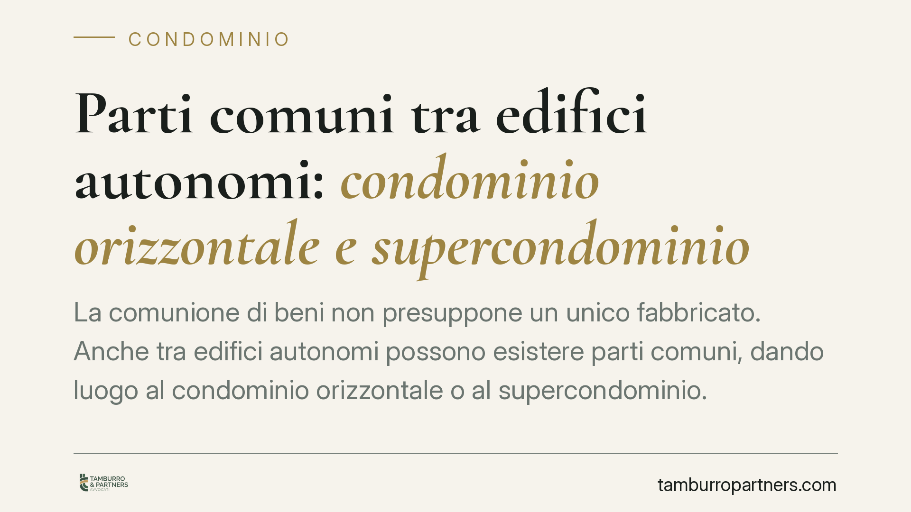

Parti comuni tra edifici autonomi: condominio orizzontale e supercondominio
La comunione di beni non presuppone un unico fabbricato. Anche tra edifici autonomi possono esistere parti comuni, dando luogo al condominio orizzontale o al supercondominio. Un recente intervento della Cassazione ribadisce i presupposti di questa contitolarità e i limiti alla sua esclusione, chiarendo quando un proprietario resta vincolato alle spese su beni che crede estranei al proprio fabbricato.

Il fatto e perché conta
L'idea comune associa il condominio a un solo edificio diviso in piani e appartamenti. La realtà è più articolata. Esistono beni e impianti condivisi tra fabbricati distinti e autonomi: viali di accesso, impianti idrici o di riscaldamento centralizzati, cabine di trasformazione, aree a verde.
La Corte di Cassazione, con un recente arresto in materia, ha ribadito un orientamento consolidato: la contitolarità di parti comuni non richiede l'unicità strutturale dell'edificio. Il punto non è di dettaglio. Da esso dipende l'obbligo di concorrere alle spese e il diritto di partecipare alle relative decisioni.
Inquadramento normativo
L'art. 1117 c.c. elenca le parti comuni dell'edificio: suolo, fondazioni, muri maestri, tetti, scale, impianti e servizi di uso comune. L'elenco opera una presunzione legale di comunione: salvo prova contraria, questi beni appartengono a tutti i partecipanti in proporzione al valore delle rispettive unità.
La norma è derogabile, ma a condizioni stringenti. L'attribuzione in proprietà esclusiva di un bene potenzialmente comune richiede un titolo contrattuale, ossia un atto che risalga all'originario costruttore o alla volontà concorde dei condomini. Non basta una delibera assembleare, né il comportamento di fatto.
Quando le parti comuni collegano più fabbricati si configurano due distinte fattispecie:
- il condominio orizzontale, tipico delle villette a schiera o dei complessi su un piano, dove le unità sono affiancate anziché sovrapposte ma condividono suolo, recinzioni o impianti;
- il supercondominio, in cui più edifici strutturalmente autonomi, ciascuno a sua volta condominio, condividono beni e servizi di uso comune.
Per il supercondominio rileva l'art. 67, comma 3, disp. att. c.c.: quando i partecipanti sono più di sessanta, ciascun condominio designa un proprio rappresentante. A costui spetta rappresentare il condominio in assemblea per la gestione ordinaria delle parti comuni di interesse generale e per la nomina dell'amministratore. Per le decisioni di manutenzione straordinaria e per le innovazioni resta invece necessaria la partecipazione diretta dei singoli condomini.
Esistenza del bene comune e prova contraria: due piani distinti
La pronuncia impone di tenere separati due profili spesso confusi.
Il primo riguarda l'esistenza oggettiva della destinazione comune: un bene è condiviso quando serve al godimento di più unità appartenenti a edifici diversi. La separazione fisica dei fabbricati non esclude la funzione comune. Una centrale termica che riscalda due palazzine distinte è, per destinazione, comune a entrambe.
Il secondo profilo è quello della prova contraria alla presunzione dell'art. 1117 c.c. Chi afferma la proprietà esclusiva di un bene deve dimostrarlo con un titolo idoneo. L'onere grava su chi contesta la comunione, non su chi la invoca. In assenza di titolo, il bene resta comune e le relative spese restano ripartibili.
La distinzione ha conseguenze concrete: contestare la destinazione comune di un impianto è cosa diversa dal provare di esserne proprietario esclusivo. Confondere i due piani espone a decisioni assembleari e giudiziali sfavorevoli.
Opponibilità ai terzi acquirenti
Un ulteriore aspetto riguarda chi acquista un'unità in questi complessi. La deroga all'art. 1117 c.c. contenuta in un titolo contrattuale è opponibile al terzo acquirente solo se trascritta nei registri immobiliari, oppure se richiamata nell'atto di acquisto.
In mancanza, l'acquirente non è vincolato dalle pattuizioni che escludono o attribuiscono beni comuni e si trova esposto a sorprese sul perimetro effettivo della comunione e sui conseguenti obblighi di spesa.
Implicazioni pratiche
Per il singolo proprietario, l'autonomia del proprio fabbricato non vale di per sé a sottrarlo alle spese sui beni comuni ai più edifici. Per l'amministratore, la corretta individuazione del perimetro condominiale incide sulla legittimità del riparto e sulla composizione dell'assemblea. Per il costruttore, la predisposizione di titoli chiari e trascritti riduce il contenzioso futuro.
Cosa fare in concreto
- Verificare l'atto di provenienza e il regolamento condominiale di natura contrattuale, per individuare eventuali deroghe all'art. 1117 c.c.
- Controllare la trascrizione delle pattuizioni che escludono o attribuiscono beni comuni, perché solo così sono opponibili ai successivi acquirenti.
- Mappare i beni e gli impianti effettivamente comuni tra gli edifici, distinguendo destinazione d'uso e titolarità.
- Riscontrare la coerenza delle tabelle millesimali con il perimetro reale delle parti comuni e con la struttura del complesso.
- È opportuno far valutare la situazione a un professionista prima di contestare una delibera di spesa o rifiutare un pagamento.
---
Contributo informativo a cura di Tamburro & Partners - Avv. Giuseppe Tamburro. Non costituisce parere legale.
Ogni condominio ha una storia a sé.
Se gestisci un'amministrazione e vuoi un confronto su una specifica questione condominiale, scrivi allo studio. Ti rispondiamo entro un giorno lavorativo.